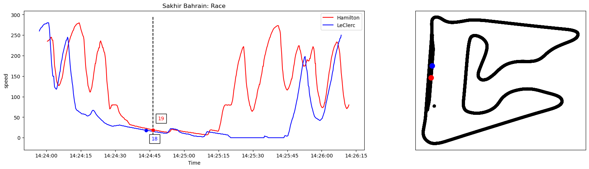
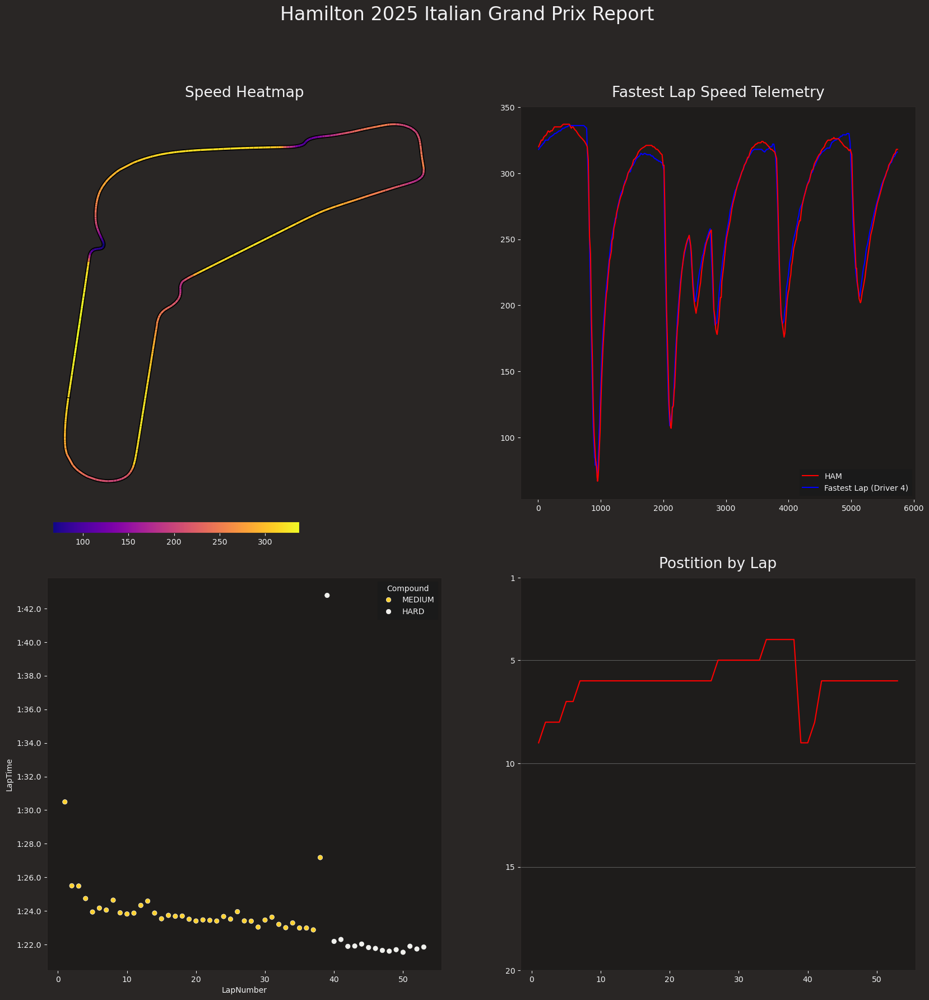

Formula 1 is a sport where data is king. Using data collected from the cars to squeeze out an extra tenth of a second each lap can mean the difference between the top spot of the podium and mising out on any points during a race. Thankfully for enthusists like myself, much of that data is available to the public. Once I discovered a few free apis that allow you to pull the data, I knew I would want to do something to use.
This project was pretty basic, but it was fun to dive into a new api and learn how to use more of the features of some python packages that I already knew.
Initially I was using the open f1 api, which allowed users to fetch data about almost any f1 race using a very simple api call. After figuring out how to make calls I decided it might be fun to make an interactive plot to explore the data. That led to the first plot.
While not very pretty, this served as a quick vizualization of everything that can be done. It can't be seen in the static version, but the plot shows the approximate position of the drivers on the track on the right side and then a graph of the selected stat in a snapshot of the race. Using the interact wrapper I added a dropdown menu to select a stat to show and a slider to select a point in the race.
While this was interesting, it was definitley a first attempt. While I was looking into it more, I discovered another similar api, fastf1, which was slightly more integrated into python and pandas usage, fetching objects that automatically got parsed into a pandas dataframe, which if you know what that means you know is very convienient. Additionally, it was easier to fetch just the information necessary for what I needed, which helped because sometimes the old api would have timeout issues since the only way I understood to get the data I needed also grabbed a lot of unesscessary things.
Eventually, this is the result.
What's fun about this is because of the way the api handles things, the script will generate a race report of the most recent race each time it is run.
Definitley a simple project, but it was fun to create something that connects with a sport I like so much. I can't take total credit of course, being it was my first time working with the api I did learn a lot from the examples listed on the website for the fastf1 api, but I had a really good time building on what was there to make a simple race report of my favorite driver.
If you are interested you can view the entire code for this project in the github repo.